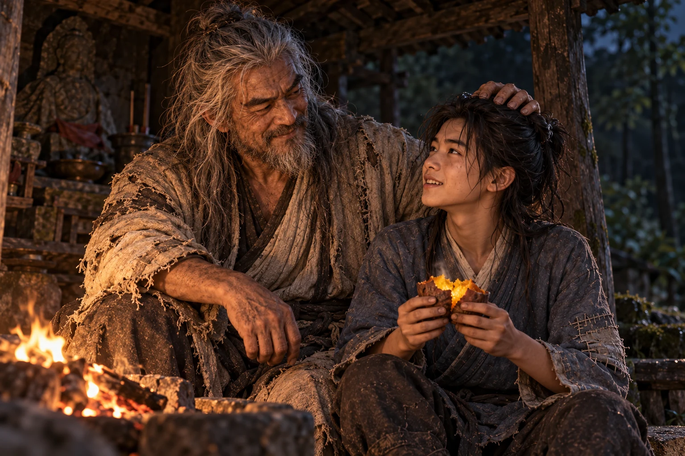
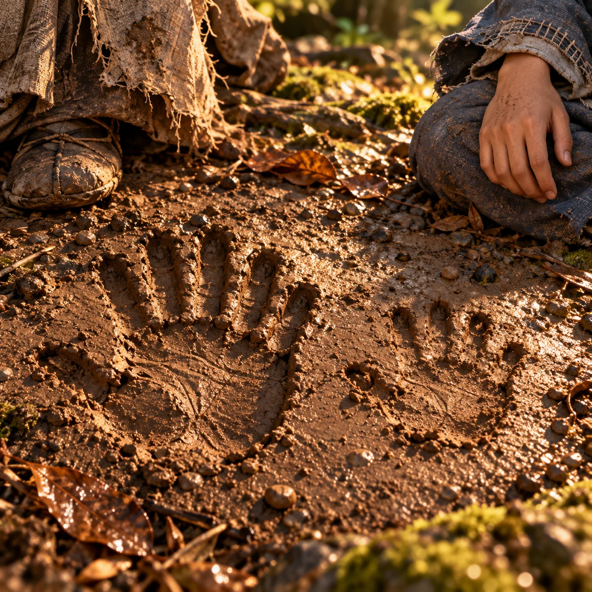
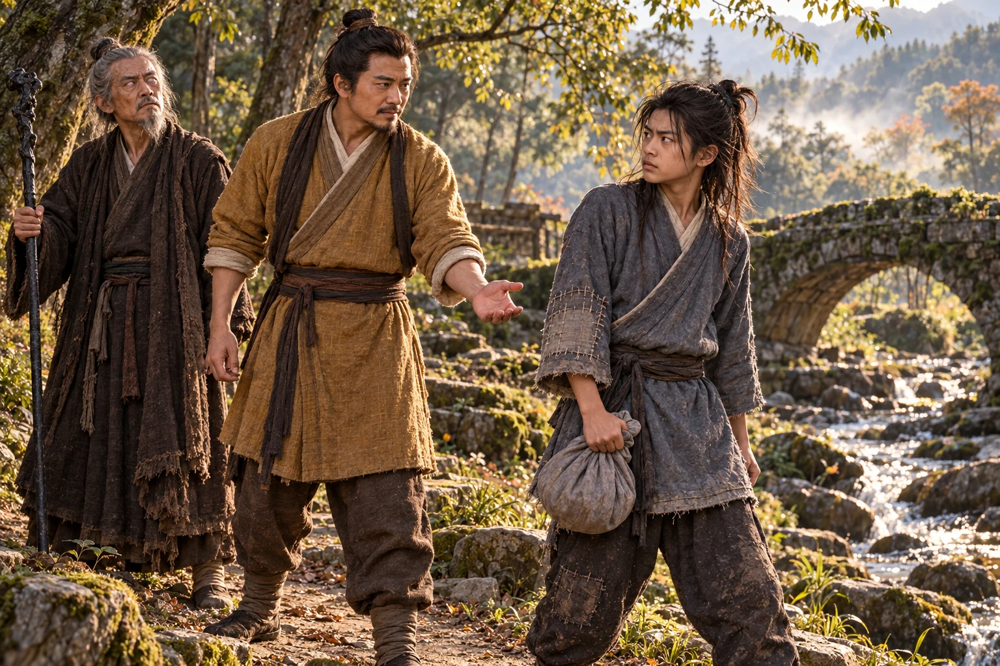

Sepasang kaki menjulur dari balik semak. Telapaknya menghadap langit.
berhenti. Setelah apa yang terjadi di rumah keluarga Lu, ia tidak ingin menemukan mayat lagi. Ia baru hendak memutar ketika kedua kaki itu bergoyang, lalu seorang lelaki tua muncul dengan berjalan di atas tangan.
Rambut kelabunya menyapu tanah. Jubah kusamnya melorot ke arah bahu, memperlihatkan celana yang terikat di pergelangan kaki. Kedua lengannya kokoh menopang tubuh. Ia berjalan lurus ke arah Dani.
“Pak Tua! Jalan sebelah sana masih lebar,” seru Dani.
Orang itu mendongak dari bawah. Dani mundur dua langkah; tumitnya tersangkut akar. Sebuah tangan tiba-tiba menyambar kerahnya sebelum ia jatuh. Dalam sekejap lelaki itu sudah berdiri tegak.
Tarikan tersebut menyentak dada Dani. Ia mendesis, menepis tangan itu, lalu menyesali gerakannya sendiri.
“Siapa yang memukulmu?” tanya lelaki tua itu.
“Perempuan bawa . Jangan ditarik begitu, sakit!” seru Dani.
Mata lelaki itu membelalak. Rambut acak-acakan membingkai wajah keras dengan hidung tinggi dan alis lebat. Ia meraba bahu Dani, seolah mencari sesuatu yang telah lama hilang.
“Berani memukul anakku? Mana dia? Panggil ke sini!” bentak lelaki tua itu.
“Sudah pergi. Dan aku bukan—” bantah Dani.
“Pergi? Takut! Semua takut kepadaku. Aku yang paling hebat. Paling hebat!”
Teriakannya membuat burung-burung terbang dari pepohonan. Dani menelan sisa bantahannya. Orang gila. Orang gila yang sanggup menegakkan tubuh dari satu tangan sambil mengangkatnya seperti karung kosong.
Ia melirik jalan di belakang lelaki itu.
“Kalau begitu, Pak Tua pasti bisa sendiri. Aku pulang dulu, ya,” kata Dani.
“Rumahmu di mana?” tanya lelaki tua itu.
membuka mulut, lalu mengangkat bahu. Lelaki tua itu malah menangkap pergelangan tangannya.
“Ikut aku. Anakku tidak boleh tidur di jalan,” ujar lelaki tua itu.
“Aku bisa jalan sendiri! Tangan yang itu juga lecet,” balas Dani.
Pegangan itu langsung mengendur.
Tempat tinggal yang dimaksud hanyalah sebuah tempat pemujaan kosong di pinggir hutan. Atapnya bocor, tetapi salah satu sudutnya masih kering. Lelaki tua itu mengeluarkan dua ubi dari lipatan jubah dan memasukkannya ke bara api. Dani memandang ubi itu, lalu memandang jubahnya.
“Masih ada yang lain di dalam situ?” tanya Dani.
“Mau apa?” tanya lelaki tua itu.
“Ayam, barangkali.”
Lelaki itu benar-benar merogoh lengan bajunya. Dani menahan tawa, kemudian terbatuk kesakitan. Tangannya buru-buru menekan dada.
Senyum lelaki tua itu lenyap. Ia berjongkok, memeriksa bagian yang terkena pukulan melalui kain baju, lalu memerintahkan Dani diam. Kali ini jari-jarinya ringan. Dani tetap mengawasi wajahnya, siap menepis apabila orang itu mulai menarik-narik lagi.
“Memar. Jangan meloncat. Jangan sok kuat,” kata lelaki tua itu.
“Aku tidak meloncat. Aku dilempar,” balas Dani.
“Siapa berani—”
“Yang tadi! Perempuan tadi. Sudah pergi, ingat?”
Lelaki itu mengerutkan dahi, lalu mengangguk dengan kesal. menyembunyikan senyum di balik lutut. Setidaknya, ia sudah menemukan cara menghentikan teriakannya.
Ketika ubi matang, lelaki itu membelah yang paling besar dan menyodorkannya. Jari Dani kepanasan. Ia memindah-mindahkannya dari telapak ke telapak sambil meniup. Lelaki itu tertawa keras, kemudian mengambil separuh ubi tersebut untuk ditiupnya sendiri.
“Pak Tua, kungfumu tadi... bisa diajarkan?” tanya Dani.
“Tentu! Ilmuku paling tinggi di dunia,” jawab lelaki tua itu.
“Aku tidak mau belajar jalan pakai tangan.”
“Bodoh. Itu lain. Aku punya ilmu yang membuat orang terpelanting sekali pukul. Mau?”
Dani mengangguk terlalu cepat. Saat mengingat dibawa melewati gerbang, ia meremas kulit ubi sampai dagingnya penyok. Kali berikutnya, ia ingin bisa melakukan lebih dari sekadar melempar buntalan. “Mau. Tapi aku tidak punya uang.”
“Siapa minta uang? Panggil ayah!” bentak lelaki tua itu.
Dani menatapnya. “Guru saja boleh?”
“Tidak! Murid banyak. Anak cuma satu. Kau anakku,” jawab lelaki tua itu.
“Aku sudah punya ayah.”
“Di mana?”
“Sudah meninggal.”
Lelaki tua itu berhenti mengunyah. Sesaat rahangnya bergerak tanpa suara. Kemudian ia mendekat, hampir berbisik.
“Tidak. Aku di sini. Lihat baik-baik. Aku masih di sini,” bisik lelaki tua itu.
Jari-jarinya mencengkeram lengan jubahnya sendiri. tadinya hendak berkata bahwa mereka bahkan tidak mirip, tetapi kata-kata itu tertahan. Wajah di hadapannya tampak begitu ketakutan sehingga ia tidak sanggup menertawakannya.
“Aku Dani. Dani Moan. Bukan anak yang Pak Tua cari,” ujar Dani.
“Dani. Dani...” gumam lelaki tua itu.
Ia mengulang nama itu, mengangguk, lalu tersenyum lebar seolah persoalannya telah selesai.
“Bagus. Anakku bernama Dani,” kata lelaki tua itu.
Dani menunduk pada ubi di tangannya. Mengangguk saja, pikirnya semula; dapat makanan, dapat pelajaran. Namun lelaki itu sudah memberinya bagian yang lebih besar bahkan sebelum meminta apa pun. “Kalau ayah angkat... boleh. Tapi aku tetap anak ayahku yang dulu.”
“Boleh, boleh! Panggil!” seru lelaki tua itu.
“Ayah.”
Suara itu keluar kecil. Lelaki tua tersebut tertawa sampai matanya basah, lalu mengusap kepala Dani dengan telapak yang masih berabu. Dani biasanya akan mengelak. Kali ini ia hanya memiringkan wajah supaya abu tidak masuk ke matanya.

Sudah lama ia tidak makan bersama orang yang menyisakan bagian terbesar untuknya.
“Lalu nama Ayah siapa? Masa kalau orang tanya, kujawab ayahku Pak Tua?” tanya Dani.
“Namaku...” jawab lelaki tua itu.
Senyumnya surut. Ia memandangi api, mengepalkan tangan, lalu memukul lututnya sendiri.
“! Ya. Ouyang Feng. Siapa lagi yang berani memakai namaku?” seru lelaki tua itu.
mengulang nama itu dalam hati. Ketika Ouyang Feng bertanya apakah ia masih lapar, Dani mengangkat separuh ubi yang belum habis. “Yang ini diselesaikan dulu. Ayah juga makan. Dari tadi cuma menyuruh.”
Tiga hari berikutnya mereka tinggal di sekitar tempat pemujaan itu. Ouyang Feng kadang membangunkan Dani sebelum terang, lalu lupa hendak mengajarinya apa. Pernah ia menyuruh Dani berjongkok, pergi mencari kayu, dan baru kembali setelah kedua paha anak itu gemetar. Dani menyambutnya dengan muka masam.
“Tadi katanya sebentar!” seru Dani.
“Kau masih di sini?” tanya Ouyang Feng.
“Memangnya aku bisa ke mana dengan kaki begini?”
Ia jatuh terduduk. Ouyang Feng tertawa, tetapi menariknya bangun dengan hati-hati. Nyeri di dada Dani belum hilang; gerakan mendadak masih membuat napasnya tersangkut. Pelajaran mereka berlangsung pendek-pendek, diselingi istirahat dan pertengkaran soal apakah Dani sudah boleh mencoba lagi.
Ouyang Feng menyebut ilmunya . Saat memberi contoh, ia merendahkan tubuh, diam sesaat, lalu menghantamkan telapak ke tanah di sampingnya. Tanah liat lembap itu amblas. Getarannya terasa sampai ke kaki Dani.
Mulut Dani terbuka. Ia segera mengambil posisi yang sama.
“Kau mau apa?” tanya Ouyang Feng.
“Mencoba,” jawab Dani.
“Belum kuajari!”
“Tadi sudah kulihat.”
Telapak Dani menghantam tanah. Lumpur memercik ke dagu; lengannya kesemutan. Bekas tangannya jauh lebih dangkal daripada milik Ouyang Feng. Ia lekas menaruh telapak sekali lagi di tempat yang sama.
“Heh! Curang!” seru .
“Tanah sebelah sini lebih keras,” balas .
Ouyang Feng meraih tengkuknya dan menggesernya ke samping. Dani meringis, lalu tertawa malu ketika ayah angkatnya menunjuk dua cekungan di tanah itu: yang satu dalam dan utuh, yang lain dangkal dengan bekas jari berantakan. “Kau hanya meniru tangannya. Yang di dalam belum ada. Dengarkan dulu!”

Dani menyeka dagunya dengan lengan baju. Kali ini ia diam. Ia mengikuti koreksi pada bahu, pinggang, dan cara mengumpulkan tenaga. Ada penjelasan yang terputus karena Ouyang Feng tiba-tiba memaki seseorang yang tidak berada di sana; Dani harus menunggu, lalu mengulang pertanyaannya dari awal.
Ia cepat mengingat gerakan, tetapi tubuhnya tidak selalu sanggup mengikuti. Pada sore terakhir, ia berhasil merasakan sesaat tenaga terkumpul sebelum buyar karena terlalu ingin segera memukul. Ia mengeluh. Ouyang Feng justru bertepuk tangan.
“Itu! Tadi itu. Anak pintar. Besok lagi!” seru Ouyang Feng.
“Sedikit lagi, Ayah. Sekali saja,” pinta Dani.
“Besok!”
Biasanya Dani masih akan menawar. Kali ini ia berhenti: meskipun mulut Ouyang Feng tersenyum bangga, telapak tuanya tetap menutupi bagian dada Dani yang memar.
Pagi berikutnya, besok yang dijanjikan itu batal.
Ouyang Feng sedang membetulkan posisi kaki Dani ketika tubuhnya mendadak kaku. Ia menoleh ke hutan, lalu berputar, mencari sesuatu di balik bahunya sendiri. “Siapa memanggil? Jangan sembunyi!”
“Tidak ada orang. Ayah?” tanya Dani.
“Namaku siapa? Kau tahu? Bukan, bukan itu!”
“Ouyang Feng. Ayah sendiri yang bilang.”
Nama itu justru membuatnya berteriak. Ia mendorong Dani menjauh, bukan untuk menyakiti, melainkan seolah ada serangan yang harus dihindarkan. Kemudian ia berlari ke antara pepohonan.
“Ayah! Tunggu aku!” menyambar buntalannya dan mengejar. Baru beberapa puluh langkah, dadanya terasa ditusuk. Ia terpaksa berhenti sambil memegangi batang pohon. Teriakan makin jauh, kemudian hilang. Tidak ada jejak yang bisa Dani ikuti di antara akar dan daun kering.
Ia menunggu sampai matahari melewati pucuk-pucuk bambu. Menjelang siang, ia kembali ke tempat pemujaan. Bara api telah dingin. Ubi terakhir masih terselip di tepinya.
Dani mengambilnya, membersihkan abu, lalu memasukkannya ke buntalan. Ia meninggalkan jejak kaki yang sengaja dibuat jelas pada tanah lembap di depan pintu, menuju jalan besar. “Aku cari di jalan, ya, Ayah. Jangan malah mencari ke dalam hutan.”
Tidak ada jawaban. Dani mengencangkan simpulnya dan berangkat.
Di dekat jembatan batu, dua orang berjalan dari arah berlawanan. Yang muda berbadan tegap, berjubah warna tanah hangat; yang tua membawa tongkat besi hitam. Mata lelaki tua itu tidak mengikuti gerak Dani, tetapi kepalanya menoleh tepat ketika sepatu Dani menggesek kerikil.
“Ada orang,” kata .
Lelaki berjubah cokelat keemasan itu berhenti. Pandangannya tertahan pada wajah Dani.

“Adik kecil, tunggu sebentar. Siapa namamu?” tanya .
“Kenapa?” tanya Dani.
“Wajahmu mirip seorang saudara Paman.”
Dani memindahkan buntalan ke sisi yang menjauhi mereka. Tiga hari lalu ia bertemu orang yang langsung mengaku ayah; sekarang ada orang lain yang mengaku paman. “Saudara Paman juga mukanya penuh lumpur?”
Guo Jing berkedip. Ia menatap noda kering di pipi Dani, sungguh-sungguh memikirkan pertanyaan itu. “Bukan lumpurnya. Matamu.”
Dani hampir tersenyum. “Dani Moan.”
Wajah Guo Jing berubah. Ia maju setapak, tetapi berhenti ketika Dani menegangkan bahunya.
“Ayahmu... ?” tanya Guo Jing.
Tongkat di sampingnya mengetuk batu dengan keras.
“Paman kenal?” tanya .
“Ibumu ?” tanya Guo Jing.
Kini Dani tidak tersenyum lagi. Ia mengangguk, matanya bergerak dari Guo Jing ke lelaki tua yang mengatupkan rahang.
“Aku Guo Jing. Ayahmu saudara angkatku. Kami sudah lama mencari kabar kalian. Ibumu sekarang di mana?” kata Guo Jing.
“Sudah tidak ada,” jawab Dani.
Tangan yang terulur perlahan turun. Ia memandang baju Dani yang robek dan buntalan kecilnya, lalu menarik napas berat.
“Maafkan Paman. Seharusnya Paman lebih cepat menemukanmu,” kata Guo Jing.
“Ibu memang tidak suka merepotkan orang,” balas Dani.
“Benar. Dulu ia juga menolak ketika kami menawarkan bantuan.”
Dani mengendurkan pegangannya sedikit. Orang ini tahu sesuatu yang tidak mungkin ditebak hanya dengan melihat wajahnya.
“Jing'er. Jangan memutuskan hanya karena wajahnya mirip,” kata .
“Namanya cocok, Guru. Dan wajahnya...” balas Guo Jing.
“Wajah bukan bukti.”
Guo Jing terdiam. Dani menatap lelaki tua itu; panas mulai merayap ke telinganya.
“Aku tidak minta diakui. Aku sedang mencari orang,” kata .
“Guru Paman bernama Ke Zhen'e. Beliau khawatir Paman keliru. Duduklah dulu, Dani. Dadamu sakit?” ujar Guo Jing.
Dani baru sadar tangannya kembali menekan baju. Ia ingin menyangkal, tetapi Guo Jing telah bergeser memberi tempat di sisi jembatan yang teduh. Tidak ada yang menariknya. Ia duduk dengan jarak satu lengan dari mereka.
Cerita tentang rumah keluarga Lu keluar tersendat, lalu makin cepat ketika sampai pada kaki dan gerbang yang hancur. Jarinya menunjuk arah jalan. Ia menyebut , lalu yang membawa .
“Wushuang dibawa perempuan itu. Apa Paman bisa mencarinya?” tanya Dani.
“Paman akan mencari kabarnya,” jawab . “Kalau Cheng Ying bersama Huang Yaoshi, dia bersama ayah mertuaku. Beliau bisa menolongnya.”
Dani mengembuskan napas. Setidaknya satu orang benar-benar berada di tempat aman. Guo Jing memeriksa memarnya setelah meminta izin; Dani mendesis ketika disentuh, lalu buru-buru berkata bahwa sakitnya sudah jauh berkurang.
“Kau perlu istirahat. Ikut Paman. Di rumah ada makanan dan tempat tidur,” ujar Guo Jing.
“Aku masih mencari ayah angkatku. Tadi kami terpisah,” balas Dani.
“Kau punya ayah angkat?” tanya Ke Zhen'e.
Nada tajam itu membuat Dani kembali menutup diri. Ia mengangguk pendek. Jangan sampai lelaki tua ini menanyainya soal Ayah, pikirnya. Mendengar bahwa Ayah suka berjalan terbalik, pasti ia akan mencibir.
“Di mana kalian tinggal?” tanya Guo Jing.
Dani menunjuk tempat pemujaan yang atapnya tampak di sela pohon. Guo Jing mengajaknya memeriksa sekali lagi. Mereka menemukan sudut tidur yang kosong, bekas api, dan jejak kaki Dani sendiri. Panggilan mereka tidak mendapat jawaban.
Saat Guo Jing bertanya ke mana ayah angkatnya biasa pergi, Dani hanya bisa menggeleng. Ia baru menyadari betapa sedikit yang diketahuinya tentang lelaki itu.
“Kita tinggalkan pesan di sini. Kalau beliau kembali, beliau tahu kau bersama Paman,” kata Guo Jing.
Dengan arang sisa api, Guo Jing menuliskan nama dan arah perjalanannya pada papan bersih di dekat tempat mereka tidur. mengawasi sampai selesai. Setidaknya kini ada sesuatu yang bisa dibaca apabila jejak kakinya hilang.
“Jing'er, kau sungguh akan membawanya?” tanya .
“Ya, Guru. Dia anak saudaraku. Kalau ada yang belum ia pahami, akan kuajari,” jawab Guo Jing.
“Aku belum bilang mau,” balas Dani.
menoleh dan menunggu. Itu malah membuat Dani salah tingkah. Ia menggaruk noda abu di ujung hidungnya, memandang jalan, lalu kembali memandang papan tersebut.
“Kalau ayah angkatku datang mencari, Paman jangan mengusirnya,” kata Dani.
“Paman akan mendengarkan beliau,” balas Guo Jing.
“Dan aku tidak makan gratis terus. Aku bisa cari kayu. Bisa jahit sedikit juga, asal jangan minta yang rapi.”
“Baik. Soal pekerjaan bisa kita bicarakan nanti. Sekarang kau perlu makan.”
Perut Dani berbunyi sebelum ia sempat menjawab. Guo Jing tersenyum tanpa menertawakan. Bahkan Ke Zhen'e hanya berdeham dan berbalik ke arah jalan.
Dani meraba ubi terakhir di dalam buntalan. Ia membiarkannya di sana, kemudian menyusul kedua lelaki itu. “Paman Guo! Jalannya jangan cepat-cepat. Kakiku masih pegal.”
Guo Jing segera memperlambat langkah. Kali ini Dani tidak perlu berlari untuk mengejar.